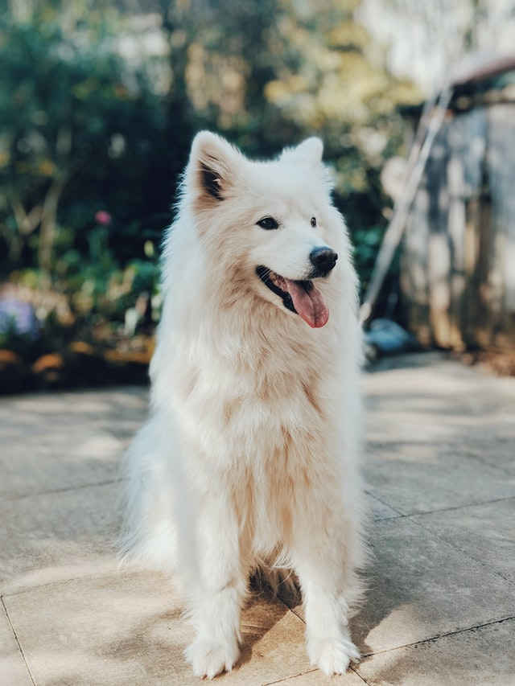

本月主打活動
熱銷推薦
獨家折扣
超殺特惠
貓狗商品
Product
貓貓商品
狗狗商品
其他商品
預約住宿
Booking
預約住宿說明
沃夫寵物生活館
牧貓精品寵物旅館
三毛寵物旅館
代遛服務
Walking
遛狗服務說明
遛狗收費方式
遛狗服務評價
立即預定遛狗
愛心捐贈
Donate
愛心捐服務理念
查詢捐款紀錄
愛心捐款
愛心捐糧
專欄
Column
熱門文章
保健議題
飼料知多少
住宿與代遛
關於我們
About us
品牌理念
品牌故事
派樂成員
常見問題
QA
本月主打活動
熱銷推薦
獨家折扣
超殺特惠
查看全部
貓貓商品
貓貓乾糧
貓貓保健
貓貓罐頭
貓貓零食
貓貓鮮食
查看全部
狗狗商品
狗狗乾糧
狗狗保健
狗狗罐頭
狗狗零食
狗狗鮮食
查看全部
其他商品
居家用品
食具/水具
外出用品
清潔用品
查看全部
預約住宿說明
精選旅館
沃夫寵物生活館
牧貓精品寵物旅館
三毛寵物旅館
遛狗服務說明
遛狗收費方式
遛狗服務評價
立即預定遛狗
愛心捐服務理念
查詢捐款紀錄
愛心捐款
愛心捐糧
熱門文章
保健議題
飼料知多少
住宿與代遛
品牌理念
品牌故事
派樂成員
貓狗商品
Product
住宿預約
Booking
代遛服務
Walking
愛心捐贈
Donate
專欄
Column
關於我們
About us
常見問題
QA
1
2
3
4
5
6
訂單完成
結帳
資料填寫
選擇代遛員
選擇地點、時間
選擇地區
選擇地區
1
選擇地點、時間
2
選擇代遛員
3
填寫資料
4
結帳
5
完成訂單
6
填寫資料
台北
大安區
2021/05/16
18:00
方案一(30分鐘)
修改
請選擇地點、時間
地點:
請選擇地點
台北
台中
台南
高雄
地區:
請選擇地區
大安區
信義區
大同區
日期:
時間:
請選擇時間
09:30
10:00
10:30
11:30
方案:
請選擇方案
方案一: 30分鐘/150元
方案二: 1小時/250元
完成
地點:
台北
台中
台南
高雄
地區:
大安區
信義區
大同區
日期:
時間:
09:30
10:00
10:30
11:30
方案:
方案一: 30分鐘/150元
方案一: 30分鐘/150元
方案二: 1小時/250元
搜尋:
詩瀅
台北市，大安區
狗就像家人一樣，能帶給我們歡樂...
Max
台北市，大安區
我是一個寵物愛好者，人家/自...
楚琳
台北市，大安區
期望能做到最好，並讓各位毛爸毛媽...
心惇
台北市，大安區
領養的第一隻狗是米克斯，因為工作忙沒有...
Lilyan
台北市，大安區
我超愛毛小孩，每次看到都被他們溶...
蔣曼
台北市，大安區
我非常喜愛狗狗，當他們汪汪叫，我會試...
可妮
台北市，大安區
從小就很喜歡動物，我養過趴趴鼠、波...
vouge
台北市，大安區
小時候就跟寵物在一起生活， 養過...
Kiara
台北市，大安區
從小到大的日子身邊都有狗狗的陪伴，狗已...
Day Care
台北市，大安區
天下父母心，他們永遠都是我們最甜蜜的負擔...
傑克
台北市，大安區
每一隻，我都訓練牠們在廁所大小便，這是一...
Laolao
台北市，大安區
高中畢業就養了我最愛的哈士奇Lupus...
chantelle
台北市，大安區
當資訊這麼發達，選擇這麼多的同時...
安迪
台北市，大安區
前也有當過管家，雇主家中的狗...
Marion
台北市，大安區
當資訊這麼發達，選擇這麼多的同...
法藍姐姐
台北市，大安區
是否也曾迷失海量褓姆名單裡，而不知...
yoyo
台北市，大安區
面對這樣的窘境，四位身為家長的褓...
米和
台北市，大安區
我會幫他洗澡、剪毛，定期帶牠散步，即...
裴娟
台北市，大安區
偶爾外縣市露營，也會帶Bingo一起去...
思瑄姐姐
台北市，大安區
寵物是人類最好的朋友～不管你多晚...
凱蒂姐姐
台北市，大安區
寵物總是很開心的迎接你從來不會因為它...

Cindy
台北市，大安區
我非常喜歡寵物～家裡的人都覺得...
傑克
台北市，大安區
從小我就非常愛狗狗貓貓...
美慧
台北市，大安區
喜歡牠們是因為牠們的純真，帶給我快樂...
Latoyia
台北市，大安區
狗就像家人一樣，能帶給我們歡樂...
裴娟
台北市，大安區
回到家看到孩子們，1天的辛勞都不見了。毛孩...
奇奇
台北市，大安區
毛孩子們都是寶，想睡哪就睡哪，怎麼搗...
文賢
台北市，大安區
本身有養寵物，也曾經幫忙出國的朋友照顧...
lulu
台北市，大安區
我有1隻可愛的短毛臘腸，她已11歲了，她是全家...
米可
台北市，大安區
我非常喜愛狗狗，當他們汪汪叫，我會試...
安琪拉
台北市，大安區
喜歡看著寵物單純天真的微笑，擁有一年的店...
Annabelle
台北市，大安區
小到吉娃娃大到哈士奇都有帶散步的經驗哦...
Ada
台北市，大安區
我是接案設計師，寵物經常能撫平我生...
寶貝安娜
台北市，大安區
我養了一隻柴犬大約6年，他在許多時候好似...
麗文
台北市，大安區
他不只是寵物，他是我最愛的家人，和最好的朋...
Debby
台北市，大安區
我喜歡跟毛小孩相處，每一次的相處都讓我...
Delia
台北市，大安區
我以前經常有幫朋友，親人照顧貓咪、狗，有...
Maxliy
台北市，大安區
19歲時姐姐帶了一隻狗狗回家，我覺得我的人生...
楚蓓蓓
台北市，大安區
我知道他們會無條件的愛我，所以我當然要...
心心
台北市，大安區
我很喜歡動物，尤其是狗狗，在忙碌的生活...
yan
台北市，大安區
我是一個愛狗人士，愛他們天真單純，永...
曼曼
台北市，大安區
17歲時姐姐養了第一隻狗，有他我就覺得很幸...
迪得莉
台北市，大安區
他療癒了我所有的不開心，看到他負面情...
丹尼絲
台北市，大安區
牽繩不離手，視線不離狗，排泄必帶走...
Evelyn
台北市，大安區
帶狗散步，還可以幫忙拍漂亮照片，幫毛...
尤妮絲
台北市，大安區
有照顧生病貓咪的經驗,且很常幫忙朋友代...
珍妮佛
台北市，大安區
我本身是一名影像工作者,代養和照顧的同時...
Georgia
台北市，大安區
我喜歡動物，從小到大沒有停止過飼養...
Gill
台北市，大安區
是一名正向寵物行為訓練師，致力於推廣正...
吉爾
台北市，大安區
我是一個寵物愛好者，人家/自...
林琳
台北市，大安區
館內所有正式員工都受有全方位專業照護訓...
惇惇
台北市，大安區
專業證書；舉凡醫療、營養、飲食、美容、行...
Giselle
台北市，大安區
非常喜歡狗，之前自己養過3隻米克斯, 又領...
蔣心
台北市，大安區
我非常喜愛狗狗，當他們汪汪叫，我會試...
漢妮
台北市，大安區
我是一個寵物控從小就想養各種動物，由...
艾娜
台北市，大安區
我從國中就開始養倉鼠高中則開始養天竺...
Jamie
台北市，大安區
我的思想裏我都是動物，同樣需要尊重...
Jean
台北市，大安區
天下父母心，他們永遠都是我們最甜蜜的負擔...
小芹
台北市，大安區
家中有寵物的關係也有了3次照顧寄宿1...
依林
台北市，大安區
我體會到除了自己的寵物會成長以外，對...
1
2
3
4
5
TOP
TOP